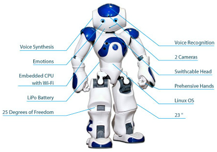

Components of Robot
Consider the robot structure showing different components of robots are:

Consider the key components of robotics are:-
Power Supply - The working power to the robot is provided by batteries, hydraulic, solar power, or pneumatic power sources.
Actuators - Actuators are the energy conversion device used inside a robot. The major function of actuators is to convert energy into movement.
motors (DC/AC)- Motors are electromechanical component used for converting electrical energy into its equivalent mechanical energy. In robots motors are used for providing rotational movement.
Sensors - Sensors provide real time information on the task environment. Robots are equipped with tactile sensor it imitates the mechanical properties of touch receptors of human fingerprints and a vision sensor is used for computing the depth in the environment.
Controller - Controller is a part of robot that coordinates all motion of the mechanical system. It also receives an input from immediate environment through various sensors. The heart of robot's controller is a microprocessor linked with the input/output and monitoring device. The command issued by the controller activates the motion control mechanism, consisting of various controller, actuators and amplifier.